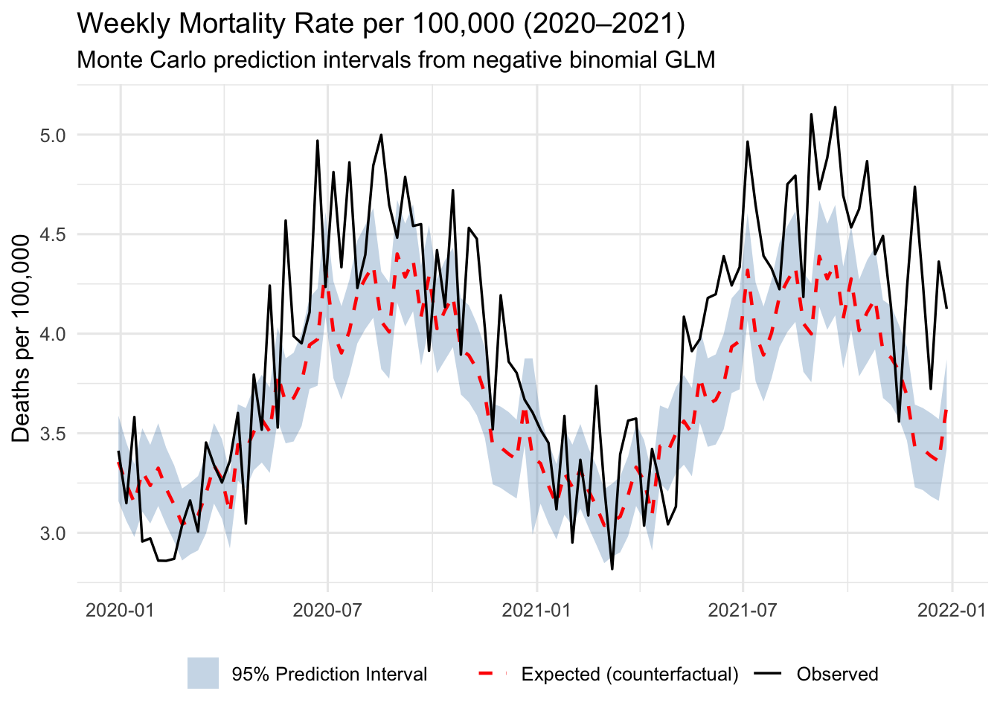

Methods for constructing confidence and prediction intervals for mortality rate estimates
Published
January 20, 2026
1 Overview
This document describes how we estimated expected weekly deaths and mortality rates using a negative-binomial generalized linear model, and how we constructed confidence or prediction intervals using: (i) a simple Poisson approximation, (ii) rate-based intervals on the log scale, and (iii) a Monte Carlo simulation based on the fitted negative-binomial model.
Throughout, let:
\(t\) index epidemiological weeks,
\(Y_t\) denote the observed number of deaths in week \(t\),
\(\mu_t = \mathbb{E}[Y_t]\) denote the expected number of deaths in week \(t\),
\(\theta\) denote the negative-binomial dispersion parameter,
\(\text{pop}_t\) denote the population at risk in week \(t\).
We separate the data into:
Baseline period: 2015–2019, used for model fitting.
Projection period: 2020–2021, for which we generate counterfactual predictions under a “no COVID-19” scenario.
2 Baseline model: negative-binomial GLM
We model weekly counts using a negative-binomial GLM with log link:
with \(K\) week categories (week 1 as reference). Model parameters \(\beta\) and \(\theta\) are estimated on the baseline period (2015–2019) using maximum likelihood via glm.nb.
For the projection period (2020–2021), we plug observed covariates (\(\text{week}_t, t, \text{pop}_t\)) into the fitted model to obtain:
Linear predictor: \(\hat{\eta}_t = \hat{\beta}_0 + \hat{f}_{\text{week}}(\text{week}_t) + \hat{\beta}_{\text{time}} \, t + \log(\text{pop}_t)\),
For reporting, we often scale to deaths per 100 000 population:
\[
r_{t,\,100k} = r_t \times 100\,000,
\]
and apply the same multiplicative factor to the confidence bounds.
This approach:
Naturally constrains rates to be positive,
Provides interpretable intervals on a rate scale,
Still relies on a Poisson-based variance approximation, but now for rates rather than counts.
5 Monte Carlo simulation from the negative-binomial model
To more fully account for over-dispersion and parameter uncertainty, we perform a Monte Carlo simulation based on the fitted negative-binomial model.
5.1 Step 1: Parameter uncertainty in \(\beta\)
Let \(\hat{\beta}\) denote the vector of estimated regression coefficients and \(\widehat{\Sigma}\) their estimated variance–covariance matrix from the fitted glm.nb model. We approximate
The uncertainty in the expected value \(\mu_t\) due to uncertainty in \(\beta\),
The extra-Poisson variability implied by the negative-binomial distribution.
5.4 Step 4: Construct prediction intervals
For each week \(t\), we now have a Monte Carlo sample \(\{Y_t^{(1)}, \dots, Y_t^{(S)}\}\). We define pointwise 95% prediction intervals as the 2.5th and 97.5th percentiles:
and summarising the empirical distribution of \(\{r_t^{(s)}\}\) using the same percentile-based intervals.
5.5 Interpretation
This Monte Carlo approach:
Propagates uncertainty in the regression parameters \(\beta\),
Incorporates over-dispersion through \(\hat{\theta}\),
Produces prediction intervals for future counts (or rates), rather than merely confidence intervals for the mean.
Compared with the simpler Poisson- or rate-based intervals, these prediction intervals are typically wider and better reflect the variability observed in real-world mortality data.
6 Summary of the CI “ladder”
We therefore obtain a progression from simple to more advanced uncertainty quantification:
Poisson Wald intervals for counts\[
\hat{\mu}_t \pm 1.96 \sqrt{\hat{\mu}_t},
\] assuming Poisson variance and ignoring parameter uncertainty.
Log-scale intervals for mortality rates\[
\log \hat{r}_t \pm 1.96 \sqrt{1 / \hat{\mu}_t},
\] exponentiated to give positive rate intervals (e.g., per 100 000).
Monte Carlo prediction intervals from the negative-binomial GLM
Quantile-based intervals from the empirical distributions.
This “CI ladder” allows us to start with fast, interpretable approximations and move towards a more realistic prediction framework that accounts for both model and process uncertainty.
7 Demo: Simulated Data with Confidence Bands
To illustrate these methods, we simulate South Africa-like weekly mortality data from 2015–2021, fit a negative binomial model on the baseline period (2015–2019), and generate counterfactual predictions with confidence/prediction intervals for 2020–2021.
7.1 Step 1: Simulate Weekly Deaths
Show simulation code
# Simulate South Africa-like weekly deaths 2015-2021weeks <-tibble(date =seq(as.Date("2015-01-05"), as.Date("2021-12-27"), by ="week")) |>mutate(year =isoyear(date),week =isoweek(date),t =row_number() )# Population with slow growthweeks <- weeks |>mutate(pop =55e6+ (year -2015) *0.7e6)# Simple seasonal function (peak winter ~week 27)season_fun <-function(wk) {0.12*sin(2* pi * (wk -27) /52) +0.08*cos(2* pi * (wk -27) /52)}# Linear trend (slight decline)trend_fun <-function(t) -0.00015* (t -min(t))weeks <- weeks |>mutate(seas =season_fun(week),trend =trend_fun(t),log_mu_base =-10.2+ seas + trend +log(pop) )# Provinces with random effects, then aggregate to nationalprovs <-tibble(province =c("EC", "FS", "GP", "KZN", "LP", "MP", "NC", "NW", "WC"),re =rnorm(9, 0, 0.10))df <-expand_grid(weeks, provs) |>mutate(# Add COVID bump starting March 2020covid =ifelse(date >=as.Date("2020-03-30"), 1, 0),covid_bump =0.10* covid * (1+0.5*sin(2* pi * (week -20) /52)),log_mu = log_mu_base + re + covid_bump,mu =exp(log_mu),theta =20,y =rnbinom(n(), size = theta, mu = mu) ) |>group_by(date, year, week, t) |>summarise(pop =sum(pop), y =sum(y), .groups ="drop")# Split into training (baseline) and test (pandemic) periodstrain <- df |>filter(year <=2019) |>mutate(week_f =factor(week))test <- df |>filter(year >=2020) |>mutate(week_f =factor(week, levels =levels(train$week_f)))
7.2 Step 2: Fit Negative Binomial GLM on Baseline
Show model fitting code
# Fit negative binomial GLM on baseline period (2015-2019)m_nb <-glm.nb( y ~ week_f + t +offset(log(pop)),data = train,link = log)theta_hat <- m_nb$thetacat("Estimated dispersion (theta):", round(theta_hat, 2), "\n")
Estimated dispersion (theta): 232.73
7.3 Step 3: Generate Predictions with Confidence Intervals
7.4.1 Weekly Death Counts with Monte Carlo Prediction Intervals
Show code
ggplot(newdat, aes(date)) +geom_ribbon(aes(ymin = mc_cf_lo, ymax = mc_cf_hi, fill ="95% Prediction Interval"), alpha =0.3) +geom_line(aes(y = mc_cf_med, color ="Expected (counterfactual)"), linetype ="dashed", linewidth =0.8) +geom_line(aes(y = y, color ="Observed"), linewidth =0.6) +scale_fill_manual(values =c("95% Prediction Interval"="steelblue")) +scale_color_manual(values =c("Observed"="black", "Expected (counterfactual)"="red")) +labs(title ="Weekly Deaths: Observed vs Counterfactual (2020–2021)",subtitle ="Monte Carlo negative binomial prediction intervals",y ="Weekly deaths",x =NULL,fill =NULL,color =NULL ) +theme(legend.position ="bottom")
Figure 1: Observed weekly deaths (solid black) vs counterfactual expected deaths (dashed) with 95% Monte Carlo prediction interval (shaded). The model was trained on 2015–2019 data; 2020–2021 shows excess mortality during the pandemic period.
7.4.2 Mortality Rates per 100,000 Population
Show code
ggplot(newdat, aes(date)) +geom_ribbon(aes(ymin = mc_rate_lo_100k, ymax = mc_rate_hi_100k, fill ="95% Prediction Interval"), alpha =0.3) +geom_line(aes(y = mc_rate_med_100k, color ="Expected (counterfactual)"), linetype ="dashed", linewidth =0.8) +geom_line(aes(y = y / pop *1e5, color ="Observed"), linewidth =0.6) +scale_fill_manual(values =c("95% Prediction Interval"="steelblue")) +scale_color_manual(values =c("Observed"="black", "Expected (counterfactual)"="red")) +labs(title ="Weekly Mortality Rate per 100,000 (2020–2021)",subtitle ="Monte Carlo prediction intervals from negative binomial GLM",y ="Deaths per 100,000",x =NULL,fill =NULL,color =NULL ) +theme(legend.position ="bottom")

Figure 2: Weekly mortality rate per 100,000 population with 95% Monte Carlo prediction interval. The observed rate (solid) exceeds the counterfactual expectation (dashed) during COVID-19 waves.
7.4.3 Comparing CI Methods: Poisson vs Monte Carlo
Show code
ggplot(newdat, aes(date)) +# Monte Carlo intervals (wider)geom_ribbon(aes(ymin = mc_cf_lo, ymax = mc_cf_hi, fill ="Monte Carlo NB"), alpha =0.2) +# Poisson intervals (narrower)geom_ribbon(aes(ymin = ci_pois_lo, ymax = ci_pois_hi, fill ="Poisson approx"), alpha =0.3) +# Expected and observedgeom_line(aes(y = mu_hat, color ="Expected"), linetype ="dashed", linewidth =0.7) +geom_line(aes(y = y, color ="Observed"), linewidth =0.5) +scale_fill_manual(values =c("Monte Carlo NB"="firebrick", "Poisson approx"="steelblue")) +scale_color_manual(values =c("Observed"="black", "Expected"="darkgray")) +labs(title ="Comparing CI Methods: Poisson vs Monte Carlo",subtitle ="Monte Carlo intervals are wider, reflecting overdispersion and parameter uncertainty",y ="Weekly deaths",x =NULL,fill ="Interval type",color =NULL ) +theme(legend.position ="bottom")
Figure 3: Comparison of confidence interval methods. The simple Poisson approximation (blue) produces narrower intervals than the Monte Carlo negative binomial method (red), which properly accounts for overdispersion and parameter uncertainty.